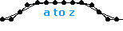
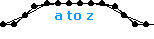

| 197 |
 |
name: Ectropy
genre: walker/motored
comments: While Entropy refers to increasing chaos, Ectropy refers to increasing order. While generally, everything slides toward chaos, there are always localized regions of Ectropy, usually near crafty beings like us. The clockwork appearance of this model makes that point well. |
| 128 |
 |
name: 8pt_Counter_Rotor
genre: motor
comments: This is the base for my model Apollo. It is a difficult motor to work with because no matter what you build around it, each mass already has seven springs attached. This makes it prone to harmful vibrations. |
| 265 |
 |
name: Einsteinian_Time
genre: other
comments: I had multiple iterations of this model going at once. Relativity is a difficult concept to present visually so I decided that showing the curvature of space-time would be the most effective. Ironically, this is most foreign to our everyday concept of time. |
| 110 |
 |
name: Elliptical_Amoeba
genre: amoeba/flex
comments: Submitted with Amoeba_Walker this model showcases the technology behind the former. By adding a second set of guts to a normal flex-rimmed amoeba I was able to keep the two center points equidistant at all times. This allows the amoeba to be mounted in a frame to power the legs of a walker. |
| 237 |
 |
name: Empedocles
genre: walker/motored
comments: If you know the story of Empedocles, you'll know what I mean when I say that this model originally reminded me of a volcano. I love those robots that scientists use to explore volcanic craters and this model looks like it could carry a payload of instruments into those harsh environments. |
| 329 |
 |
name: Equal_Scales
genre: snake
comments: I had the idea for a snake like this during the design of Armadillicus, but I had no idea how to build it. Since things got a little slow I revisited the old idea and made two models based on what I have learned since about actuator programming. |
| 159 |
 |
name: Ether
genre: walker/inertial
comments: This model uses my Linear_Hexagonal_Motor in an inertial setup. I am not entirely happy with the result, mainly because there is an inconsistency in the motor that I did not notice (or know how to fix anyway) at the time. If you look carefully, you can see the power points pulse in and out slightly as they travel. |
| 003 |
 |
name: Evil_With_a_Capital_E
genre: other/representational
comments: After reading the official tips from sodaplay, I managed to make these shapes oscillate back and forth. A simple 'hear no evil...' theme rounded out the image, although I don't think I was trying to say anything in particular. At this point I was just hoping to make something interesting enough to get in the zoo. |
| 228 |
 |
name: Exegesis
genre: walker/motored
comments: Exegesis is a word having to do with interpreting text so the name is meant to indicate that the model revisits the structure of Palimpsest in a new way. It also is one of many walkers that I think are two tall for aesthetic and mechanical reasons. |
| 047 |
 |
name: ExternalTwirl
genre: roller
comments: This model resulted from a rather complex experiment that I ended up deleting most of. The result moved on its own in a way I hadn't intended but I liked it and thought it was original so I submitted it. I tuned it so that it made part of a rotation every step it takes. |


 
